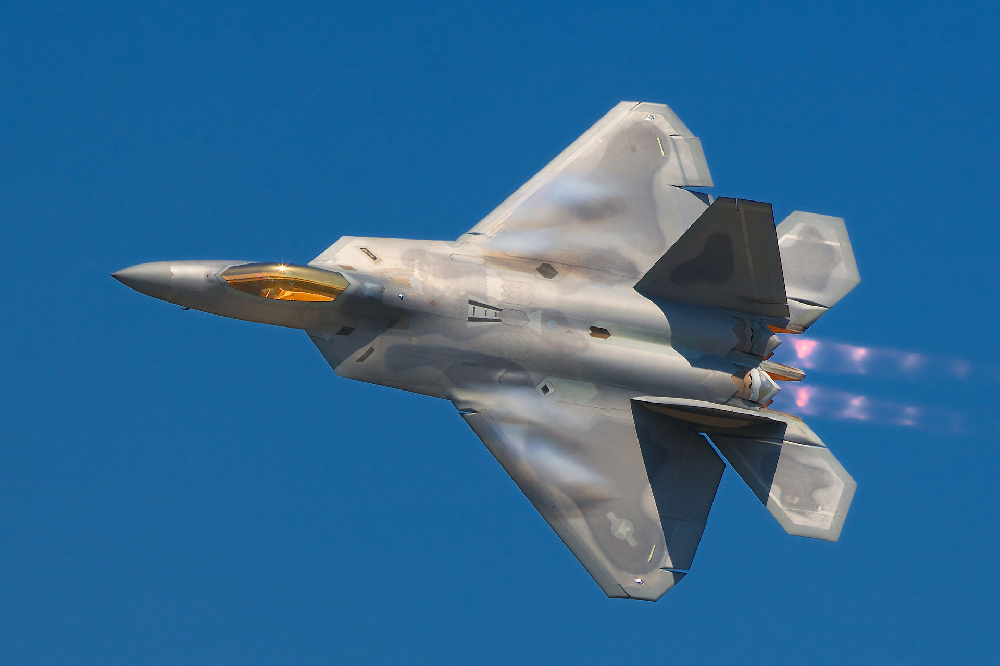
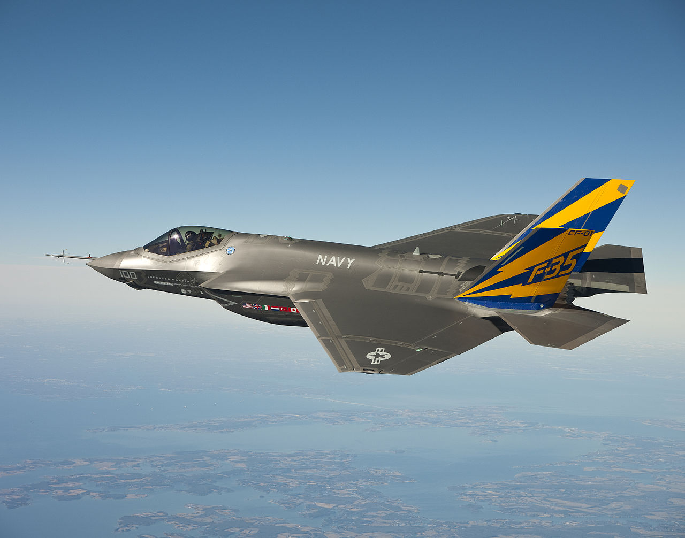
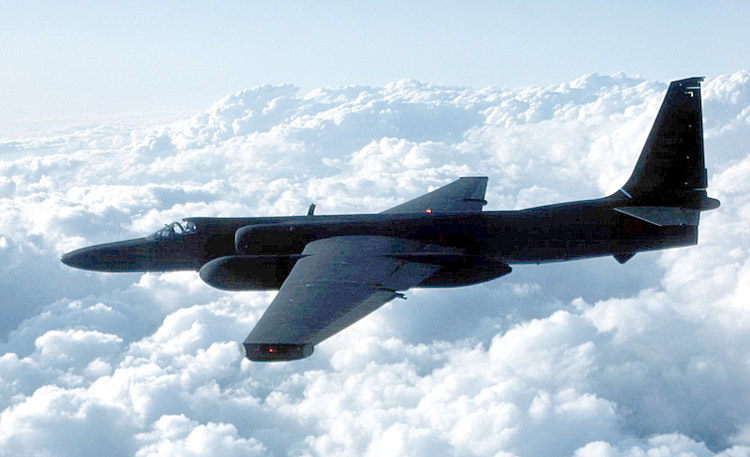
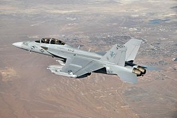
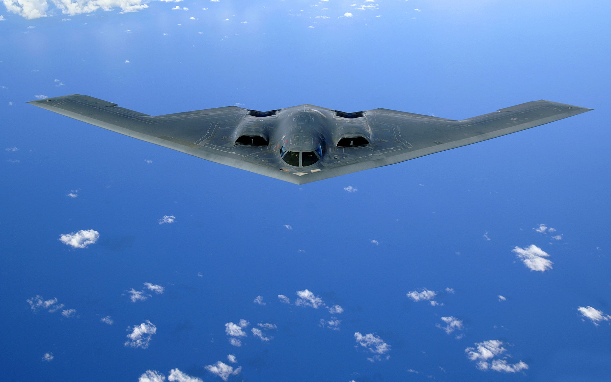
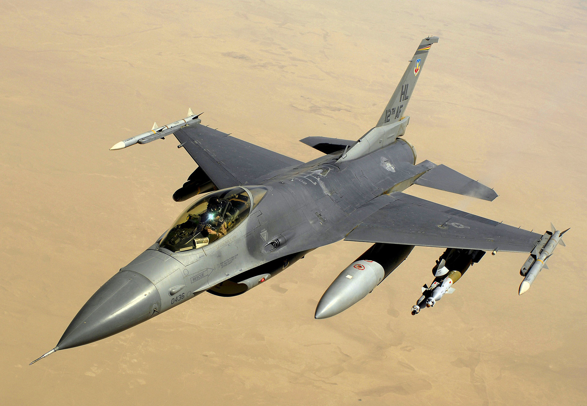
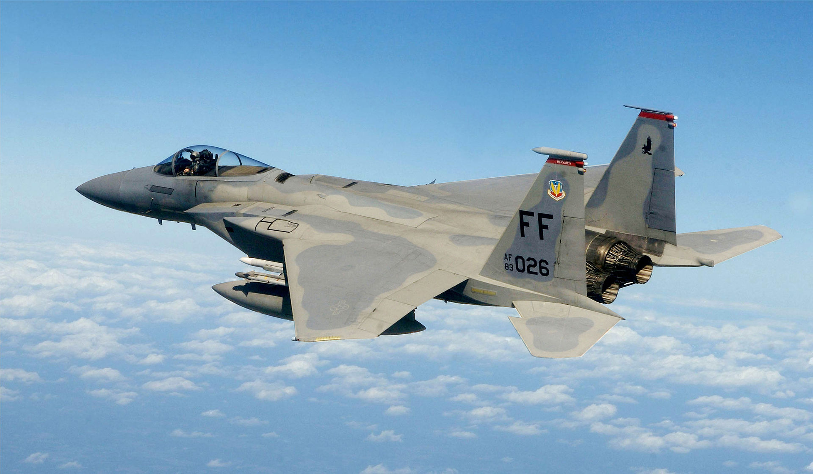

Проект по XML програмиране: "Самолетоносач"
Производители на самолети, носени от Нимиц
Lockheed Martin Aeronautics
Lockheed Martin Aeronautics е създаден през 1995 година, като служителите му наброяват 116000
F-22 Raptor
- Роля: fighter
- Цена: $150 милиона
- Екипаж: 1
- Обхват: 3320 км
- Тегло: 19700 кг

F-35 Lightning II
- Роля: multirole
- Цена: 142 милиона долара
- Екипаж: 1
- Обхват: 2220 км
- Тегло: 13199 кг

U-2
- Роля: reconnaissance
- Цена: 200 милиона долара
- Екипаж: 1
- Обхват: 10300 км
- Тегло: 6760 кг
Boeing
Boeing е създаден през 1916 година, като служителите му наброяват 168421
EA-18G Growler
- Роля: electronic-warfare
- Цена: $68.2 милиона
- Екипаж: 2
- Обхват: 2346 км
- Тегло: 15011 кг
Northrop Grumman
Northrop Grumman е създаден през 1994 година, като служителите му наброяват 68100
B-2 Spirit
- Роля: bomber
- Цена: $737 милиона
- Екипаж: 2
- Обхват: 11100 км
- Тегло: 71700 кг
General Dynamics
General Dynamics е създаден през 1899 година, като служителите му наброяват 92200
F-16 Fighting Falcon
- Роля: multirole
- Цена: $14.6 милиона
- Екипаж: 1
- Обхват: 4420 км
- Тегло: 8570 кг
McDonnell Douglas
McDonnell Douglas е създаден през 1967 година, като служителите му наброяват 50000
F-15 Eagle
- Роля: fighter
- Цена: $28 милиона
- Екипаж: 1
- Обхват: 5550 км
- Тегло: 127000 кг
Изработено от Михаил Жеков, фн. 24469